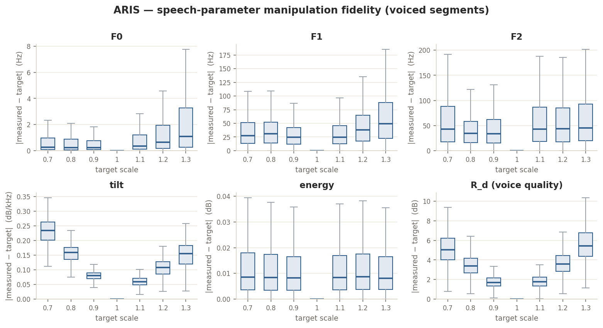
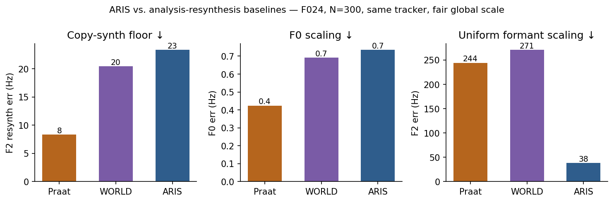
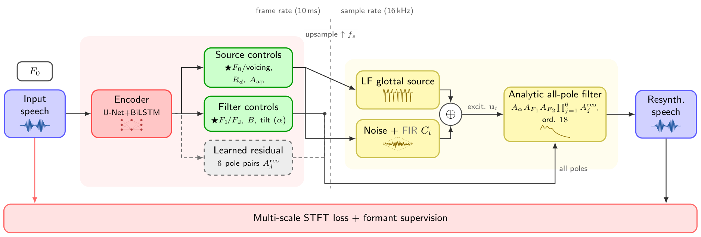

An analytic source–filter neural vocoder with an
interpretable, decoupled control surface, built for phonetic research.
ARIS exposes the parameters phoneticians already reason with —
F0, F1, F2, phonation and prominence, plus an exploratory nasalisation control — as
controls over a neural vocoder. The network estimates them; deterministic DSP places each
pole and source parameter directly. Move one control and the others hold.
one slider, two acts: F2 sweeps while F1 holds — then F1 sweeps while F2 holds
38 Hz
median F2 manipulation error — Praat 244 · WORLD 271 (same tracker, N = 300)
F0 · F1 · F2
cleanly independent controls — 7 phonetic controls in the studio
1 h
single-speaker audio per voice — no text, no phonetic labels
Interactive
Control studio
Pick a phonetic control and drag the slider along its seven-step continuum.
Each control runs live on several Mandarin syllables at once (varied onset, rime
and tone, including compound finals), so you can hear it generalise. The demonstration is
simple: the targeted control sweeps while everything else holds.
Control
Manipulation step4 / 7
leftright
Drag to sweep this control through all seven steps; one parameter moves while the rest stay fixed.
← → step · ↑ ↓ control · R source
Measured trajectory of the three syllables; the current step is ringed.
On a vowel control the formants trace a path while F0 stays fixed; on the pitch control the reverse holds.
Evidence
Near-exact, by construction
Each control is a physical DSP parameter — a pole frequency, a glottal shape,
a gain — not a latent fed to a black box, so the synthesiser realises the requested value
closely and predictably. Over all 1517 F024 utterances (the full single-speaker corpus,
in-domain) × six target scales, the median |measured − target| is
F0 ≈ 0.4 Hz, F1 ≈ 31 Hz, F2 ≈ 40 Hz — against the ≈ 150 Hz F2 manipulation error reported
for HiFi-Glot. F1 is the one exception: the all-pole tract reads low F1 slightly high, so its
slope sits just below 1 (over 120 syllables: slope 0.93, R² 0.96; F2: slope 0.96, R² 0.97).
The commanded pole is exact; the measured F1 carries a small upward bias.

Manipulation fidelity over all 1517 F024 utterances (full corpus, in-domain): the per-utterance
|measured − target| for each control across target scales 0.7–1.3.
Baselines
Versus the standard tools
The tools a phonetician actually reaches for are copy-synthesis
(analysis–resynthesis, no manipulation), Praat (PSOLA + Change Gender) and WORLD.
On a level field — F0 scaling and uniform formant scaling, the only formant edit all
three share — all resynthesise cleanly and nail F0 (< 1 Hz). But on uniform formant scaling
Praat and WORLD under-shoot ~6–7× (F2 error 244 / 271 Hz) while ARIS lands it (38 Hz).
And only ARIS edits a single formant, carries a voice-quality control, and reads values
back in Hz. Same F024 utterances, same tracker, N = 300.

Fair comparison on F024 (N = 300, same tracker): all resynthesise cleanly (left) and
scale F0 perfectly (middle); on uniform formant scaling (right) Praat and WORLD under-shoot
badly while ARIS is accurate.
Capability & fidelity — median F2 Hz where numeric. △ = possible but poor/degraded.
Tool
copy-synth floor
F0 scale
uniform formant
indep. F1/F2
voice quality
Hz read-back
Praat
8
<1
244
△ (LPC, degraded)
✗
✗
WORLD
20
<1
271
✗
△ (aperiodicity)
✗
ARIS
23
<1
38
✓
✓ (Rd)
✓
Listen to each manipulation done every way it can be. Pick a parameter —
F0, F1, F2, or F1+F2 together (uniform) — and an utterance, then drag
the slider through the continuum (×0.7–×1.3) or hit ▶ sweep on a card. F0 and F1+F2 show
ARIS · Praat · WORLD; the single-formant edits (F1, F2 alone) show only ARIS vs. Praat's
LPC route, since WORLD and Change Gender can't isolate one formant. Same utterance, same tracker.
parameter
utterance
×1.0
What to listen for. On the F1+F2 · uniform axis at moderate
scales, ARIS and WORLD sound similar — both are high-fidelity vocoders shifting the
formants the same direction; this is WORLD's best case. The gap opens (i) at the
extremes, where WORLD under-shoots badly (F2 lands ~1900 Hz for a 2500 Hz target), and
(ii) decisively on the single-formant axes: WORLD's spectral envelope is non-parametric,
so it cannot isolate one formant (no WORLD card there). The deeper reason: WORLD
copies the natural envelope — faithful, but not controllable; ARIS generates it
from interpretable poles — controllable and exact, at the cost of a slightly more model-like
high band.
Synthesis quality
Faithful resynthesis
Every manipulation above starts from analysis–resynthesis, so it is only
meaningful if that resynthesis is close to transparent. Three sustained Mandarin vowels,
natural on the left, ARIS on the right: the harmonic structure and formant pattern are
reproduced. Synthesis runs ≈ 28× faster than real time on CPU (RTF 0.036, 4 threads).
Neural-MOS snapshot
Predicted naturalness (UTMOS22) for the resynthesis against the natural
recording. Read the resynth–natural gap within a voice, not absolutes across voices:
UTMOS is a wideband-trained neural proxy, so the 16 kHz F024 voice scores low for synthesis
and reference alike — its near-equal means (2.53 vs 2.70) indicate near-transparent
resynthesis. For CSMSC and LJSpeech the 1 h (v2) and 5 h (v4) rows share a reference; the
v4 gain partly reflects the ≈ 5× training data.
UTMOS22 predicted naturalness, mean ± per-utterance std, N = 50 (SEM ≈ 0.08); the reference column is the natural recording. Not a human MOS test.
Voice
Language
Sample rate
Model
Train data
UTMOS · resynth
UTMOS · natural (ref)
F024
Mandarin
16 kHz
v4
1 h
2.53 ± 0.63
2.70 ± 0.68
CSMSC
Mandarin
24 kHz
v2
1 h
2.99 ± 0.39
3.90 ± 0.37
CSMSC
Mandarin
24 kHz
v4
5 h
3.35 ± 0.44
3.90 ± 0.37
LJSpeech
English
22 kHz
v2
1 h
3.43 ± 0.31
4.37 ± 0.09
LJSpeech
English
22 kHz
v4
5 h
4.00 ± 0.23
4.37 ± 0.09
Generalisation
The same instrument, other voices
The control surface is not tuned to one speaker. The identical pipeline
drives two more voices, CSMSC (Mandarin) and LJSpeech (English), 5 h models,
here on full sentences, with the three simplest plain-scale controls: pitch, the F1+F2
vowel space, and modal ↔ breathy phonation. The same controls, a different speaker and language.
The three examples per control are the highest-UTMOS of a 15-utterance pool.
Method
How it works
The phonetic control surface
Every control is a parameter phoneticians already reason with, estimated by the
network, then realised directly by deterministic DSP.
The six phonetic dimensions, the DSP parameter each maps to, and its perceptual meaning.
Phonetic dimension
Control
Meaning
Pitch
F0
intonation & register — scales the natural F0 (real tone shape preserved)
Vowel quality
F1F2
tongue height & backness — the vowel space
Phonation / voice quality
Rd + aperiodicity
breathy ↔ modal ↔ pressed (glottal shape and HNR/noise)
Spectral tilt / effort
α
vocal effort / source spectral balance
Loudness · prominence
energy(+F0+α)
stress as a joint cue (timing fixed, so duration excluded)
Nasality (exploratory)
anti-formant
oral ↔ nasal(ised) — a learned pole–zero (ARMA) zero, controllable
Architecture

The ARIS pipeline. The encoder runs at frame rate and only estimates parameters;
every starred control (F0, Rd, aperiodicity, F1/F2, tilt) is then realised by
deterministic DSP at sample rate — an LF glottal source plus filtered noise driving the
analytic all-pole filter. Training uses multi-scale STFT loss with formant supervision.
Analytic source–filter core
A differentiable LF glottal-flow source excites an analytic vocal-tract cascade:
spectral tilt + range-constrained F1/F2 resonator biquads + learned higher poles. The
formant biquads are the control surface: physical, not latent.
Decoupled by construction
Because F1/F2 are dedicated, range-bounded poles, scaling one does not leak into the
other: F0/F1/F2 are cleanly independent. Energy, tilt and glottal
Rd show modest, partly measurement-induced cross-talk; the studio above
demonstrates the clean F0/F1/F2 cases.
Interpretable aperiodicity
A band-aperiodicity head, supervised by WORLD D4C, controls the harmonic-vs-noise
balance per frequency band: an explicit, observable breathiness / HNR dimension.
Low-resource
As little as one hour of single-speaker audio per voice (the cross-language models use 5 h).
No text and no phonetic labels at synthesis time; analysis–resynthesis with true F0.
Scope & limitations
The oral tract is all-pole (clean, decoupled formants); a learned pole–zero (ARMA)
section adds the anti-formant nasals need, exposed as a controllable nasalisation control.
The learned nasal zero mostly activates under manipulation; aggregate resynthesis gain is modest.
A dedicated low nasal pole (~250 Hz) and anti-formant supervision are future work.
Single speaker, ~1 h; timing is fixed (prominence excludes duration); rounding via F2 only.
Paper
Cite
The paper is under review for IEEE SLT 2026; the citation below is a placeholder
until the proceedings entry is final.
@inproceedings{aris2026,
title = {ARIS: Analytic Resonance for Interpretable Synthesis},
booktitle = {Proc. IEEE Spoken Language Technology Workshop (SLT)},
year = {2026},
note = {to appear}
}